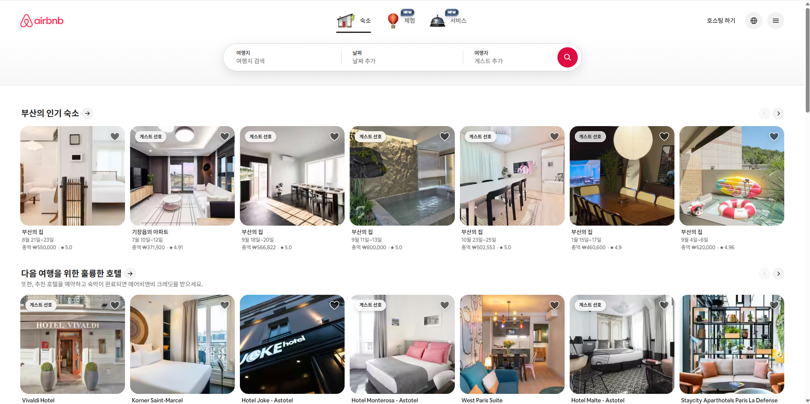
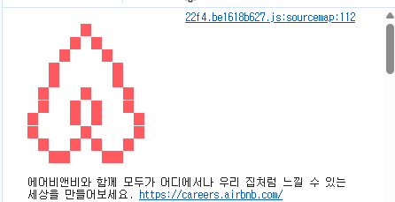

에어비앤비가 프론트엔드 생태계에서 갖는 상징성에 주목하여, 실제 웹페이지의 HTML과 CSS 아키텍처를 뜯어보았습니다.
신기하거나 특별한건 없는건 사실입니다. 하지만 Airbnb가 공개한 스타일가이드는 회사·팀이 이 가이드를 그대로, 또는 조금 수정해서 자기 팀 컨벤션으로 쓰고 있을 만큼 영향력이 큽니다. 그것과 같은 결로 많은 프론트엔드 개발자가 생각하는 기초, 기본을 이 정도로 철저히 지키는 기업은 흔치 않다고 생각합니다.

display: flex; overflow-x: auto; 가로
스크롤 캐러셀로 추정 — "n개 중 n개 표시" 텍스트와 인디케이터가
근거
display: grid 다단 배열로 추정
aria-label,
aria-hidden, role 속성이 거의
모든 인터랙션 요소에 붙어 있음 — a11y를 거의 강박적으로
챙기는 수준
카드 컴포넌트를 한 번만 잘 짜두면 도시·숙소가 수백 개로 늘어나도 CSS 수정이 필요 없는 구조. flex 캐러셀 + grid 바닥글처럼 용도에 맞게 다른 레이아웃 기법을 섞어 쓴 점도 실무적.
실제 컴파일된 CSS 클래스명이 해시값이라 소스만 봐선 어떤 속성을 썼는지 정확히 확인이 안 됨. DOM 구조와 화면 동작으로 추론한 것이라 100% 단정은 어려움.

01~18에서 배운 내용 중 이 사이트를 만들 때 실제로 쓴 개념만 골라 정리했습니다.
.class로 콕 집고, li em처럼 띄어쓰면 자손을 선택. 일반 → 구체 순서로 작성.
.tag { color: var(--accent); }
padding=안쪽 여백, margin=바깥쪽 여백. box-sizing: border-box로 크기 계산을 편하게.
* { box-sizing: border-box; }
네비게이션 메뉴, 분석 다이어그램의 카드 캐러셀처럼 자식을 가로로 나란히 둘 때 display: flex 한 줄로 해결.
.nav .wrap { display: flex; }
정리 카드 6개를 3열로 배치. Airbnb 바닥글 다단 링크처럼 fr 단위로 균등 분할하고 media query로 열 개수 조정.
grid-template-columns: repeat(3, 1fr);
상단 네비게이션은 sticky로 고정, 카드 번호 배지는 relative 부모 + absolute 자식으로 배치.
.nav { position: sticky; top: 0; }
링크는 link → visited → hover → active 순서로 작성해야 hover 효과가 제대로 보임.
a:link, a:visited, a:hover, a:active
바로 이 카드 왼쪽의 색 띠가 ::before로 만든 가짜 요소. HTML을 건드리지 않고 CSS만으로 장식용 요소를 추가.
.concept-card::before { content: ""; }
상단 네비게이션의 "Report" 로고 텍스트에 그라디언트가 좌우로 흐르는 반짝임 효과를 @keyframes로 구현.
animation: brand-shine 4s linear infinite;
화면 폭이 760px, 520px 아래로 줄면 grid 열 수와 flex 방향을 바꿔 레이아웃 유지.
@media (max-width: 520px) { ... }